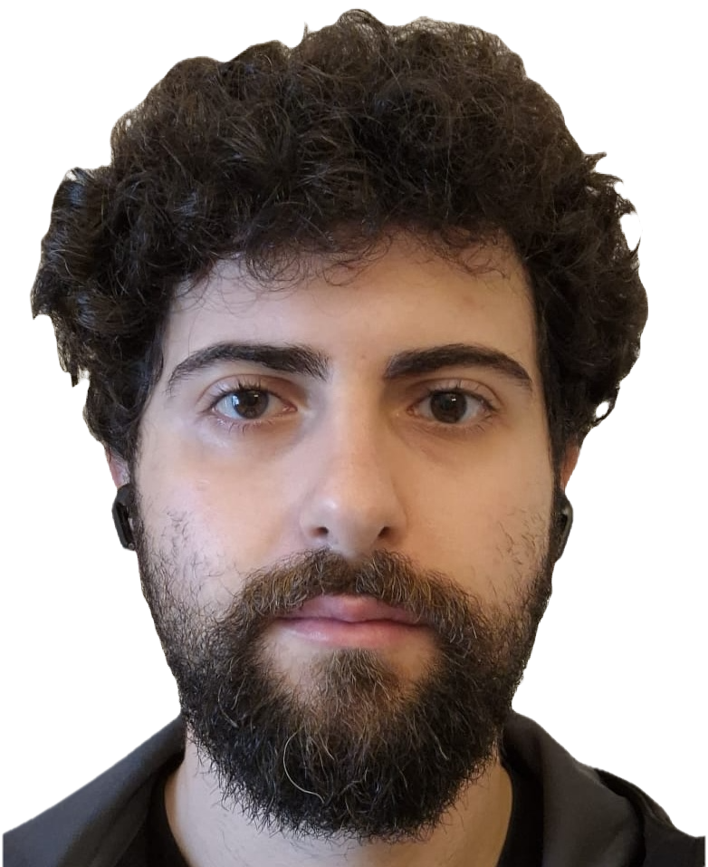

Research in baryon form factors, charmonium decays, dispersion relations and QCD phenomenology.
I am a PhD student working in theoretical particle physics. My research focuses on baryon electromagnetic form factors, hyperon production, charmonium decays into baryon–antibaryon pairs, and dispersion-relations methods.
The complete and up-to-date publication list is available on INSPIRE.
View INSPIRE ProfileEmail: francesco.rosini@pg.infn.it
ORCID: 0009-0009-0080-9997
INSPIRE: Francesco Rosini
GitHub: FRosINFN